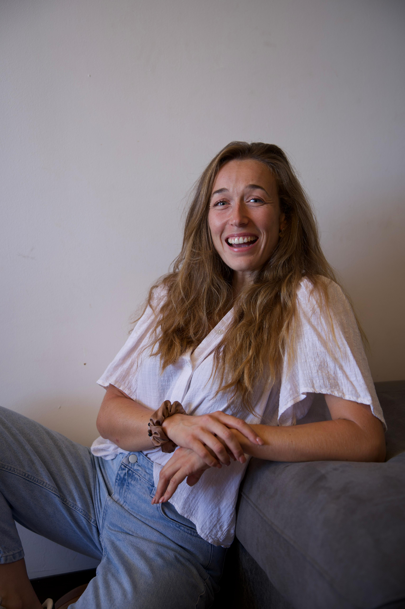
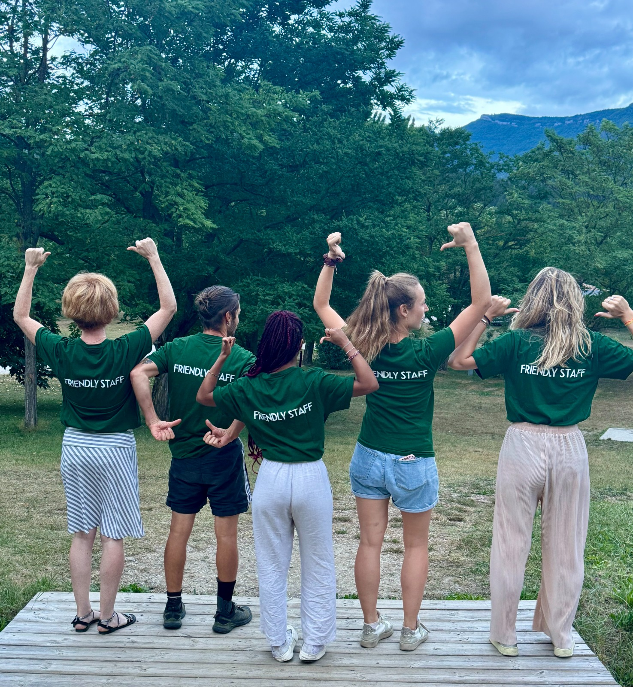

10 ans
d’expérience en management touristique, avec une conviction : la performance repose sur l’énergie des équipes.


J’accompagne les dirigeants et équipes de PME à clarifier leur vision,
renforcer leur cohésion et retrouver une énergie collective stable et engagée.


Je m’appelle Marie. Pendant des années, j’ai observé la même difficulté dans de nombreuses PME : beaucoup d’engagement individuel, mais une dynamique collective qui s’essouffle avec le temps. C’est là que j’interviens : remettre du sens, de la clarté et de la cohérence dans la manière de travailler ensemble.
Mon approche relie stratégie humaine et actions concrètes. Nous travaillons sur les habitudes, les modes de décision, la communication et la posture managériale pour installer une culture solide, vivante et durable.
10 ans
d’expérience en management touristique, avec une conviction : la performance repose sur l’énergie des équipes.
2 formations
en coaching et sophrologie, pour allier méthode et bien-être dans mes accompagnements.
1 passion
révéler la force distinctive de chaque entreprise et la transformer en résultats concrets.
Nos services
Pour dirigeants et RH
J’accompagne les dirigeants et les équipes RH à construire une culture claire, alignée et opérationnelle. Nous travaillons l’alignement des valeurs, de la mission et de la vision pour accélérer les décisions et les rendre plus cohérentes. Nous installons aussi des rituels et des traditions qui renforcent l’engagement et le sentiment d’appartenance, tout en affirmant une identité culturelle forte qui attire les talents et fidélise les collaborateurs. Résultat : une entreprise où chaque décision, chaque action et chaque collaborateur avance dans le même sens.
Prendre rendez-vousPour managers et équipes
J’accompagne les managers et les équipes pour canaliser l’énergie collective et la transformer en performance concrète. En renforçant la cohésion et la collaboration, les tensions diminuent et l’efficacité augmente durablement. Nous valorisons également la singularité de chaque membre pour nourrir l’engagement, la motivation et la satisfaction au travail. Résultat : des équipes qui produisent plus, ensemble, dans un climat de confiance et d’enthousiasme.
Prendre rendez-vousValeurs & méthode
Une méthode en 4 étapes pour transformer la culture d’entreprise en leviers visibles de cohésion et de performance.
01
Nous posons un diagnostic précis des pratiques, des dynamiques et des signaux faibles de l’organisation.
02
Nous définissons des repères clairs pour aligner vision, comportements, décisions et rituels du quotidien.
03
Nous canalisons l’énergie collective grâce à un travail concret sur la posture, la communication et la collaboration.
04
Nous mesurons les évolutions et ajustons les actions pour renforcer la cohésion et la performance dans le temps.

Vous avez des questions ? J’y réponds.
J’adopte une approche orientée résultats qui combine clarté stratégique et intelligence relationnelle. Nous commençons par un diagnostic, puis nous construisons des actions concrètes pour renforcer la cohésion, la culture managériale et la performance durable.
Prêt à avancer
Un premier échange pour clarifier vos enjeux et définir la meilleure trajectoire d’accompagnement.
Prendre rendez-vous